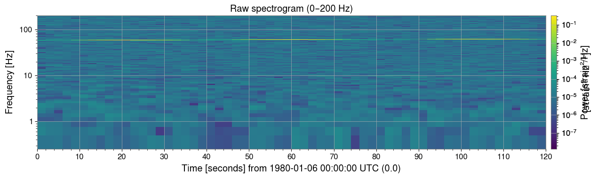
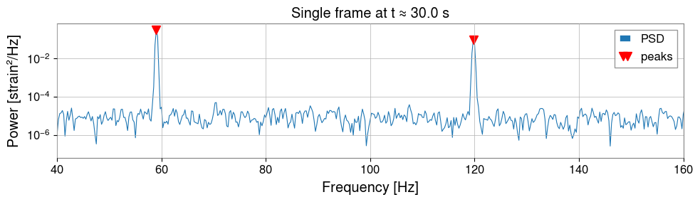
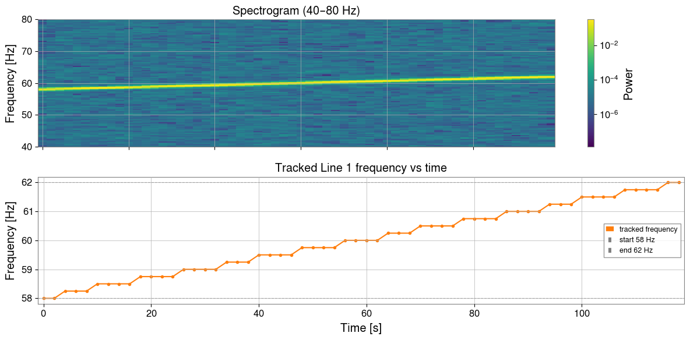
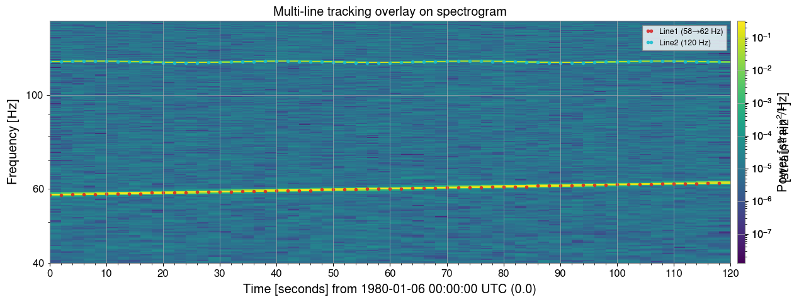
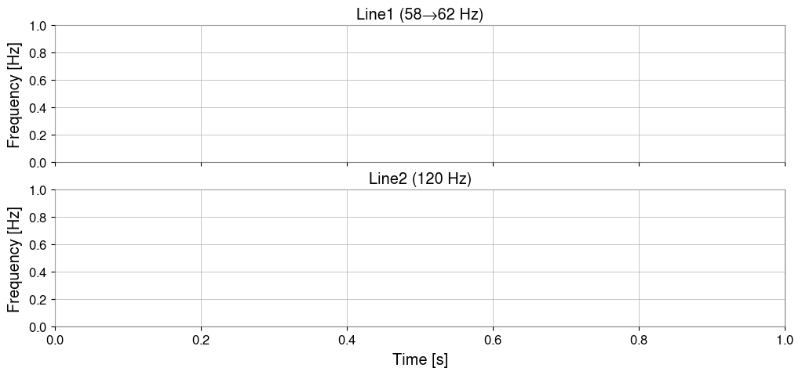
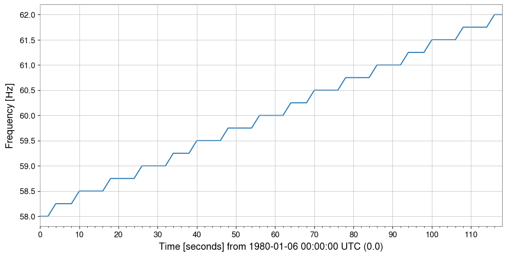
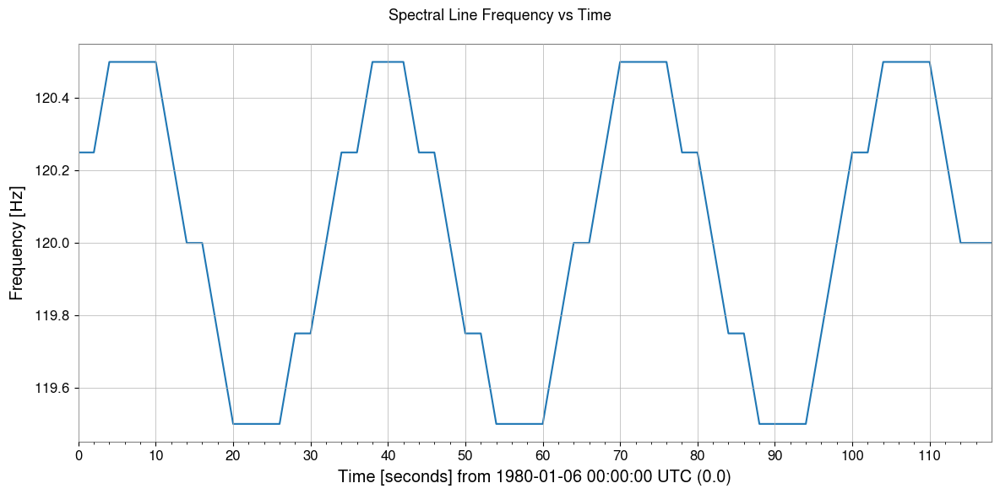

Note
このページは Jupyter Notebook から生成されました。 ノートブックをダウンロード (.ipynb)
ピーク/スペクトル線の時間追跡

このチュートリアルは advanced_peak_detection.ipynb の続編です。 スペクトログラムを使ってスペクトル線を時間方向に追跡する方法を解説します。
典型的な応用例：
商用電源周波数変動に伴うハム波のドリフト
バイオリンモード共振周波数の温度依存ドリフト
周波数変調されたキャリブレーション注入ライン
戦略: スペクトログラムを計算 → 各フレームでピーク検出 → 最近傍法 で時刻間を接続。
[1]:
import matplotlib.pyplot as plt
import numpy as np
from scipy.signal import find_peaks as sp_find_peaks
from gwexpy.timeseries import TimeSeries
plt.rcParams["figure.figsize"] = (12, 4)
1. 合成データの準備
白色ガウスノイズに埋め込まれた 2 本のスペクトル線：
ライン |
挙動 |
振幅 |
|---|---|---|
1 |
58 → 62 Hz 線形ドリフト |
0.5 |
2 |
120 Hz ± 0.5 Hz 正弦波ウォブル |
0.3 |
[2]:
rng = np.random.default_rng(0)
DURATION = 120 # s
FS = 512 # Hz
t = np.arange(0, DURATION, 1 / FS)
# ── Line 1: linear drift 58 → 62 Hz ──────────────────────────────────────────
f1_t = 58.0 + (4.0 / DURATION) * t # frequency as a function of t
phi1 = 2 * np.pi * np.cumsum(f1_t) / FS # instantaneous phase
s1 = 0.5 * np.sin(phi1)
# ── Line 2: 120 Hz with slow sinusoidal wobble ±0.5 Hz ───────────────────────
f2_t = 120.0 + 0.5 * np.sin(2 * np.pi * 0.03 * t)
phi2 = 2 * np.pi * np.cumsum(f2_t) / FS
s2 = 0.3 * np.sin(phi2)
# ── Background Gaussian noise ────────────────────────────────────────────────
noise = rng.normal(0, 0.05, len(t))
strain = s1 + s2 + noise
ts = TimeSeries(strain, dt=1.0 / FS, name="STRAIN", unit="strain")
print(f"Duration : {DURATION} s | Sample rate: {FS} Hz")
print(f"Line 1 : 58 → 62 Hz (linear drift)")
print(f"Line 2 : 120 Hz ± 0.5 Hz (slow wobble)")
Duration : 120 s | Sample rate: 512 Hz
Line 1 : 58 → 62 Hz (linear drift)
Line 2 : 120 Hz ± 0.5 Hz (slow wobble)
2. スペクトログラム概観
ts.spectrogram2(fftlength, overlap) で時間-周波数パワーマップを取得します。 斜めのストリーク（ライン 1 のドリフト）とわずかに波打つ水平ストライプ （ライン 2 のウォブル）がすでに見えています。
[3]:
import warnings
FFTLEN = 4.0 # FFT length [s]
OVERLAP = 2.0 # overlap [s]
spec = ts.spectrogram2(FFTLEN, overlap=OVERLAP)
print("Spectrogram shape (time × freq):", spec.shape)
print(f"Time bins : {spec.shape[0]} | Freq bins: {spec.shape[1]}")
print(f"Freq resolution: {spec.df.value:.4f} Hz")
_plt_sp = spec.plot(norm="log", figsize=(12, 4))
ax = _plt_sp.gca()
fig = _plt_sp.figure
ax.set_ylim(0, 200)
ax.set_title("Raw spectrogram (0–200 Hz)")
_plt_sp.colorbar(label="Power [strain²/Hz]")
with warnings.catch_warnings():
warnings.filterwarnings("ignore", message="This figure includes Axes that are not compatible with tight_layout")
with warnings.catch_warnings():
warnings.filterwarnings("ignore", message="This figure includes Axes that are not compatible with tight_layout")
with warnings.catch_warnings():
warnings.filterwarnings("ignore", message="This figure includes Axes that are not compatible with tight_layout")
with warnings.catch_warnings():
warnings.filterwarnings("ignore", message="This figure includes Axes that are not compatible with tight_layout")
plt.tight_layout()
plt.show()
Spectrogram shape (time × freq): (60, 1025)
Time bins : 60 | Freq bins: 1025
Freq resolution: 0.2500 Hz
plt.tight_layout()

3. フレーム毎のピーク検出
spec.value[t, :] は時刻インデックス t の 1 次元 PSD 配列です。 高さ閾値と最小周波数間隔制約を指定して scipy.signal.find_peaks に渡します。
[4]:
import warnings
# ── Inspect one time frame ────────────────────────────────────────────────────
T_IDX = spec.shape[0] // 4 # pick a time index near the 30-s mark
row = spec.value[T_IDX, :] # PSD at this time
freqs = spec.frequencies.value # frequency axis [Hz]
peaks_idx, props = sp_find_peaks(
row,
height=row.max() * 0.02, # at least 2 % of frame maximum
distance=int(5 / spec.df.value),# minimum 5 Hz separation
)
print(f"Time index {T_IDX} (t ≈ {spec.times.value[T_IDX]:.1f} s)")
print(f"Detected peaks at: {freqs[peaks_idx].round(2)} Hz")
fig, ax = plt.subplots(figsize=(10, 3))
ax.semilogy(freqs, row, lw=0.8, label="PSD")
ax.semilogy(freqs[peaks_idx], row[peaks_idx], "rv", ms=8, label="peaks")
ax.set_xlim(40, 160)
ax.set_xlabel("Frequency [Hz]")
ax.set_ylabel("Power [strain²/Hz]")
ax.set_title(f"Single frame at t ≈ {spec.times.value[T_IDX]:.1f} s")
ax.legend()
with warnings.catch_warnings():
warnings.filterwarnings("ignore", message="This figure includes Axes that are not compatible with tight_layout")
with warnings.catch_warnings():
warnings.filterwarnings("ignore", message="This figure includes Axes that are not compatible with tight_layout")
with warnings.catch_warnings():
warnings.filterwarnings("ignore", message="This figure includes Axes that are not compatible with tight_layout")
with warnings.catch_warnings():
warnings.filterwarnings("ignore", message="This figure includes Axes that are not compatible with tight_layout")
plt.tight_layout()
plt.show()
Time index 15 (t ≈ 30.0 s)
Detected peaks at: [ 59. 119.75] Hz

4. 単一ライン追跡（最近傍法）
アルゴリズム
seed = 初期周波数の推定値
for 各時刻フレーム t:
PSD(t) の全ピークを検出
現在の seed に最も近いピークを探す
if 距離 < max_jump:
その周波数を記録
seed ← 新しい周波数 # 次フレームへ伝播
else:
NaN を記録 # 未検出
各ステップで seed を更新することが重要です。 これによりゆっくりドリフトするラインを追いかけられます。
[5]:
import warnings
# ── Nearest-neighbor single-line tracker ─────────────────────────────────────
def track_line(spec, seed_freq, max_jump=2.0, min_height_frac=0.01):
"""
Track one spectral line through a spectrogram using nearest-neighbor search.
"""
freqs = spec.frequencies.value
n_times = spec.shape[0]
track = np.full(n_times, np.nan)
current = float(seed_freq)
for t in range(n_times):
row = spec.value[t, :]
thr = row.max() * min_height_frac
idx, _ = sp_find_peaks(row, height=thr,
distance=int(2 / spec.df.value))
if len(idx) == 0:
continue
pf = freqs[idx]
nearest = int(np.argmin(np.abs(pf - current)))
if np.abs(pf[nearest] - current) < max_jump:
track[t] = pf[nearest]
current = pf[nearest] # propagate seed to next frame
return track
track_line1 = track_line(spec, seed_freq=58.5)
times = spec.times.value
# ── Plot ──────────────────────────────────────────────────────────────────────
from matplotlib.colors import LogNorm
fig, axes = plt.subplots(2, 1, figsize=(12, 6), sharex=True)
_im = axes[0].pcolormesh(
spec.times.value, spec.frequencies.value,
spec.value.T,
norm=LogNorm(vmin=spec.value[spec.value > 0].min(),
vmax=spec.value.max()),
shading="auto",
)
axes[0].set_ylim(40, 80)
axes[0].set_ylabel("Frequency [Hz]")
axes[0].set_title("Spectrogram (40–80 Hz)")
fig.colorbar(_im, ax=axes[0], label="Power")
mask = ~np.isnan(track_line1)
axes[1].plot(times[mask], track_line1[mask], "o-", ms=3, color="tab:orange",
label="tracked frequency")
axes[1].axhline(58, ls="--", color="gray", lw=0.8, label="start 58 Hz")
axes[1].axhline(62, ls="--", color="gray", lw=0.8, label="end 62 Hz")
axes[1].set_xlabel("Time [s]")
axes[1].set_ylabel("Frequency [Hz]")
axes[1].set_title("Tracked Line 1 frequency vs time")
axes[1].legend(fontsize=9)
with warnings.catch_warnings():
warnings.filterwarnings("ignore", message="This figure includes Axes that are not compatible with tight_layout")
with warnings.catch_warnings():
warnings.filterwarnings("ignore", message="This figure includes Axes that are not compatible with tight_layout")
with warnings.catch_warnings():
warnings.filterwarnings("ignore", message="This figure includes Axes that are not compatible with tight_layout")
with warnings.catch_warnings():
warnings.filterwarnings("ignore", message="This figure includes Axes that are not compatible with tight_layout")
plt.tight_layout()
plt.show()
valid = ~np.isnan(track_line1)
print(f"Detection rate: {valid.sum()}/{len(track_line1)} frames "
f"({100 * valid.mean():.0f} %)")
print(f"Freq range: {np.nanmin(track_line1):.2f} – {np.nanmax(track_line1):.2f} Hz")

Detection rate: 60/60 frames (100 %)
Freq range: 58.00 – 62.00 Hz
5. 複数ライン同時追跡
seed 周波数ごとにトラッカーを走らせ、結果をスペクトログラムに オーバーレイして視覚的に確認します。
[6]:
import warnings
# ── Track both lines simultaneously ──────────────────────────────────────────
SEEDS = {
"Line1 (58→62 Hz)": 58.5,
"Line2 (120 Hz)": 120.0,
}
tracks = {name: track_line(spec, seed, max_jump=2.5)
for name, seed in SEEDS.items()}
# ── Overlay on spectrogram ────────────────────────────────────────────────────
colors = ["tab:red", "tab:cyan"]
_plt_sp = spec.plot(norm="log", figsize=(12, 5))
ax = _plt_sp.gca()
fig = _plt_sp.figure
ax.set_ylim(40, 150)
_plt_sp.colorbar(label="Power [strain²/Hz]")
for (name, trk), color in zip(tracks.items(), colors):
mask = ~np.isnan(trk)
ax.plot(times[mask], trk[mask], "o", ms=3, color=color,
label=name, alpha=0.85)
ax.set_title("Multi-line tracking overlay on spectrogram")
ax.legend(loc="upper right", fontsize=9)
with warnings.catch_warnings():
warnings.filterwarnings("ignore", message="This figure includes Axes that are not compatible with tight_layout")
with warnings.catch_warnings():
warnings.filterwarnings("ignore", message="This figure includes Axes that are not compatible with tight_layout")
with warnings.catch_warnings():
warnings.filterwarnings("ignore", message="This figure includes Axes that are not compatible with tight_layout")
with warnings.catch_warnings():
warnings.filterwarnings("ignore", message="This figure includes Axes that are not compatible with tight_layout")
plt.tight_layout()
plt.show()
plt.tight_layout()

6. 周波数ドリフトの可視化
各トラック結果を TimeSeries でラップして周波数変化をプロットし、 ドリフト統計を計算します。
[7]:
import warnings
# ── Build TimeSeries from tracking results and plot frequency evolution ────────
fig, axes = plt.subplots(len(tracks), 1, figsize=(12, 5), sharex=True)
for ax, (name, trk) in zip(axes, tracks.items()):
mask = ~np.isnan(trk)
t_valid = times[mask]
f_valid = trk[mask]
ts_freq = TimeSeries(f_valid, times=t_valid, name=name, unit="Hz")
ts_freq.plot(ax=ax)
ax.set_ylabel("Frequency [Hz]")
ax.set_title(name)
axes[-1].set_xlabel("Time [s]")
plt.suptitle("Spectral Line Frequency vs Time", fontsize=13)
with warnings.catch_warnings():
warnings.filterwarnings("ignore", message="This figure includes Axes that are not compatible with tight_layout")
with warnings.catch_warnings():
warnings.filterwarnings("ignore", message="This figure includes Axes that are not compatible with tight_layout")
with warnings.catch_warnings():
warnings.filterwarnings("ignore", message="This figure includes Axes that are not compatible with tight_layout")
with warnings.catch_warnings():
warnings.filterwarnings("ignore", message="This figure includes Axes that are not compatible with tight_layout")
plt.tight_layout()
plt.show()
# ── Drift statistics ─────────────────────────────────────────────────────────
print(f"{'Line':<25} {'min [Hz]':>10} {'max [Hz]':>10} {'drift [Hz]':>12}")
print("-" * 60)
for name, trk in tracks.items():
lo, hi = np.nanmin(trk), np.nanmax(trk)
print(f"{name:<25} {lo:>10.3f} {hi:>10.3f} {hi - lo:>12.3f}")



Line min [Hz] max [Hz] drift [Hz]
------------------------------------------------------------
Line1 (58→62 Hz) 58.000 62.000 4.000
Line2 (120 Hz) 119.500 120.500 1.000
[8]:
print("=" * 60)
print("Peak / Line Tracking — Key Steps")
print("-" * 60)
steps = [
("1. spectrogram2()", "Compute time-frequency power map"),
("2. sp_find_peaks(row)", "Detect peaks in each time frame"),
("3. nearest-neighbour", "Connect peaks across frames by min-dist"),
("4. NaN on miss", "Mark undetected frames as NaN"),
("5. TimeSeries(track)", "Build frequency-vs-time TimeSeries"),
]
for s, d in steps:
print(f" {s:<25} {d}")
print("=" * 60)
============================================================
Peak / Line Tracking — Key Steps
------------------------------------------------------------
1. spectrogram2() Compute time-frequency power map
2. sp_find_peaks(row) Detect peaks in each time frame
3. nearest-neighbour Connect peaks across frames by min-dist
4. NaN on miss Mark undetected frames as NaN
5. TimeSeries(track) Build frequency-vs-time TimeSeries
============================================================